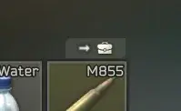

AutoDeposit
- Downloads
- 95,860
- Favourites
- 47
- Mod lists
- 123
AutoDeposit
Features
What this mod will do
Click the button added to your equipment, and items will be transferred to containers in your stash that already contain that same item. This allows you to quickly group multiple copies of items into the same container. This leaves it up to you, the player, to decide where to put the first instance of any given item that you get.
If you have containers in your equipment (like a rig in your backpack), it will transfer items inside those containers. It will also transfer the container itself if and once they are empty, following the same rules as any other item. It will not transfer non-empty containers.

What this mod is NOT
This mod is not a “dump my whole inventory and automatically sort it into specialty containers” mod. The responsibility of organizing your stash is still on you, but (for example) once you’ve decided that 855A1 ammo goes into that particular ammo box, this mod will deposit future 855A1 into that same box.
Installation
Like almost every mod here, extract the 7z archive into your SPT directory.
You need 7zip to extract and install this mod.
Example (thanks DrakiaXYZ for the gif)

Uninstallation
To uninstall, simply delete Tyfon.AutoDeposit.dll from <your SPT folder>/BepInEx/plugins
Troubleshooting
Q: My items were deleted!
A: Have you double and triple checked? This mod will put items into containers even if they’re nested 50 backpacks deep. Check again. Use Stash Search.
Q: Your icon is Terraria’s deposit icon, not quick stack.
A: Hush, you.
Q: I found a bug!
A: Open an issue or make a comment here. Please include logs if possible!
If you’d like to support my work, you can buy me a coffee ☕
Version
5.0.0
Updated for SPT 4.0
Version
4.0.0
Updated for SPT 3.11 🚀
Version
3.0.0
Updated for 3.10
Version
2.0.0
Updated for 3.9.0